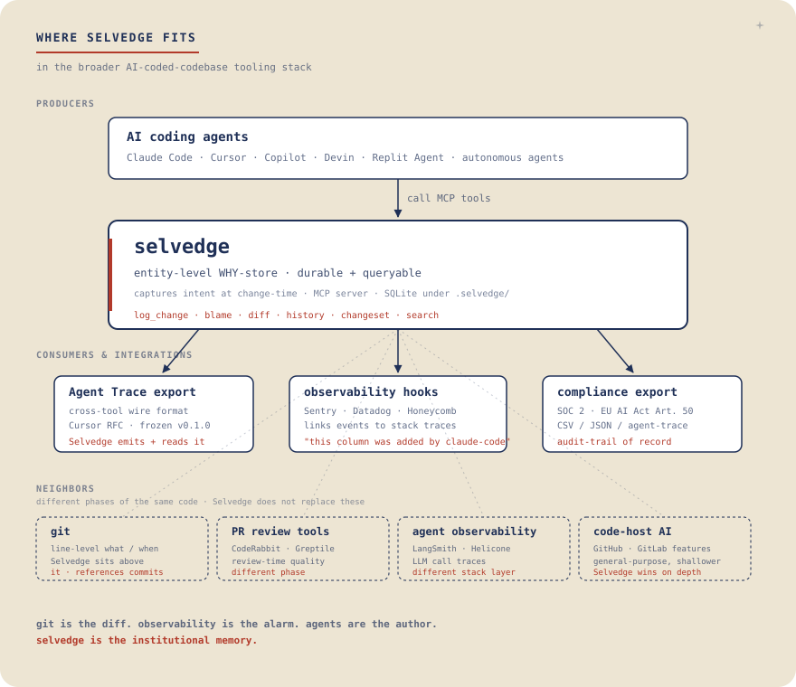

selvedge
git blame for the why behind ai-written code
An MCP server that AI coding agents call as they work, so the reasoning behind every change survives the session that produced it. Captured live, by the agent — not inferred afterward.
— a record of intent
the why, woven
into the change
Most "git blame for AI" tools ask a second LLM to look at a diff afterward and guess at the reasoning. That's exactly the problem they're trying to solve, doing it backwards.
Selvedge inverts it. The agent that wrote the change
calls log_change as it works, and
the reasoning lands in storage from the same context that
produced the code. Six months later you can still ask
"when was users.stripe_customer_id
added and why?" and get a real answer — the actual one,
captured at the source.
Storage is local SQLite. Your data lives in
.selvedge/ next to your code.
No servers, no accounts, no API keys.
— what it looks like
captured live,
by the agent
$ selvedge blame user_tier_v2 user_tier_v2 Changed 2025-10-14 09:31:02 Agent claude-code Commit 3e7a991Reasoning User asked to add a grandfathering flag for legacy free-tier users during the pricing migration. Stores the original tier so we can backfill discounts without touching billing history.
That reasoning was captured by the agent at the moment the column was added — written into Selvedge from the same context that produced the change. Not inferred from the diff afterward by a second LLM. Not a hand-typed commit message generalizing across a dozen files.
— mcp surface
six tools,
woven tight
log_change
Record a change with reasoning. The only writer in the system — every other tool reads.
blame
Most recent change to an entity. What, when, who, why — the full record at a glance.
diff
Full history for an entity, or a prefix — users matches every users.*.
history
Filtered by since, project, or changeset. Ranges, not points.
changeset
Every event sharing a feature slug — pull a feature's full scope across many entities at once.
search
Full-text across paths, diffs, reasoning, and agents. Find the change you half-remember.
One writer, five readers. Selvedge is the storage and query layer; the agent supplies the reasoning. If the agent didn't pass any, the field is empty — and that's a useful signal too.
— position in the stack
where selvedge
fits
AI agents call Selvedge as they work. Selvedge captures the why into a durable, queryable store and emits it back out — as Agent Trace records for cross-tool readers, as observability metadata that links into Sentry/Datadog stack traces, and as compliance artifacts for SOC 2 and EU AI Act audits.
Selvedge does not replace
git, PR review tools, agent
observability, or general-purpose code-host AI features. It
sits between them — the provenance-as-first-class-citizen
layer that everything else references.

— why captured-live matters
three ways
to record intent
| tool | reasoning source | granularity |
|---|---|---|
| Selvedge | Captured live by the agent in context | Entity (DB column, function, env var, dep, route) |
| Inference-after | Generated by a second LLM from the diff at session end | Line |
| Commit-time | Hand-typed commit message | Line / commit |
The agent's intent lives in the prompt context that produced
the change. Inference-after-the-fact tools have to reverse-engineer
that intent from the diff afterward — which is the problem we're
trying to solve. Entity-level matters because the question after
git blame is usually "what's the
history of this column?", not "what's the history of
lines 40–48 of users.py?"
— boundaries
what it
doesn't do
- Selvedge does not call an LLM. It is the storage and query layer; the agent supplies the reasoning.
- It does not generate reasoning from diffs. If the agent didn't pass any, the field is empty.
- It does not require Postgres, an account, an API key, or a network connection.
- It is not a hosted service. Your
.selvedge/never leaves your machine unless you commit it. - It does not scan your codebase. Events are recorded by the agent at the moment of change, not by a periodic crawler.
— the long view
trivial day one.
structural year two.
A fresh Selvedge DB is worth almost nothing. The interesting version is the one that's been running on a codebase you actually care about for eighteen months — when every column you can't explain, every dependency you're afraid to remove, every "we don't know why this is here" moment finally has an answer written by the agent that put it there.
Install cost is flat. The data accrues. That asymmetry — small today, load-bearing later — is the entire reason to start now instead of after the codebase has already gotten away from you.
The pitch is not "ship faster." The pitch is the receipts you'll wish you had — for the postmortem, the migration, the auditor, the acquirer, the next maintainer.
— get started
two commands.
thirty seconds.
selvedge setup detects which AI tools
you have, writes the MCP entry into each tool's config, drops
the canonical agent-instructions block into your project's
CLAUDE.md /
.cursorrules /
copilot-instructions.md, runs
selvedge init, and installs the
post-commit git hook for commit-hash backfill. Every modified
file gets a .bak next to it before
any change reaches disk. Re-running on an already-set-up project
is a no-op.
For CI bootstrap and devcontainer
postCreateCommand, run
selvedge setup --non-interactive --yes.
— where it lives
the loom,
and the catalog
See also the changelog, the architecture and roadmap, the getting-started doc, the comparison page, the FAQ, or open an issue.